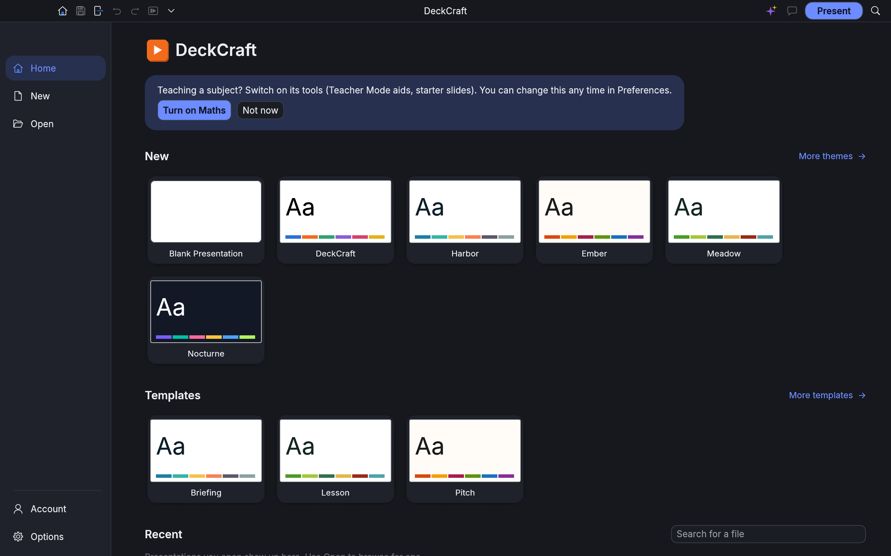
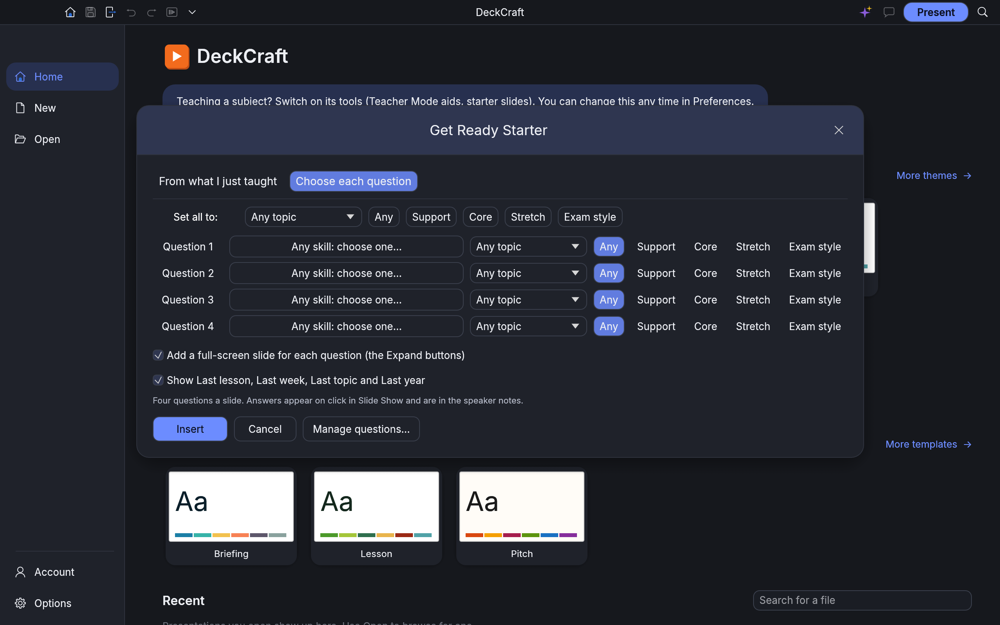

Get Ready starters, exam questions and board tools in your lessons. Keep this beside you for your first week.
1. Open the app
On the Mac: open Maths Slides from Applications.
In a browser (any computer or iPad): go to the school address you were given and sign in with the staff password. Nothing to install.

Home: New, Open, and your templates.
2. Make a Get Ready starter
Open or start your lesson slides and choose Insert › Get Ready Starter.
Pick From what I just taught. Choose the year group, class route, unit and the lesson you have just taught.
Four question cards appear: Last lesson, Last week, Last topic, Last year.
Press Insert. The answers appear on a click in Slide Show and are in your speaker notes.

The Get Ready dialog. With a curriculum loaded you choose the year, class, unit and lesson, and the four cards appear.
Change a question you don't like
New question: another question on the same skill, with new numbers.
Easier / Harder: the same skill, one level down or up.
Pick…: choose from about five other questions on the same skill.
Change skill…: start typing a skill, for example adding negatives. The list narrows as you type and includes every year group. Click one and the card gets a question on it.
Edit: change the wording, answer or heading yourself.
To redo a starter you have already inserted, select its slide, open Get Ready again and press Replace this slide.
3. Exam questions
Insert › Exam Question puts one exam-style question on a slide with the number, marks and answer lines. Insert › Question Library searches past-paper questions by skill, tier, calculator or not, marks and year, and inserts the question with its mark scheme hidden until you click.
4. Teacher Mode (board tools)
Start Slide Show, then open the Teacher Mode toolbar for the pen, highlighter, shapes, eraser, ruler, protractor and calculator. Pen size follows the size of the slide, so it looks the same on a laptop and a large board.
5. Add or improve questions
Open the question bank page (your maths lead will give you the address; it is the same address as the app with /bank/ on the end) and sign in with the staff password.
Everyone: type your name at the top, search the bank, and press Something is wrong / suggest an edit on any question, or Suggest a question to add one. An editor approves it.
Editors (log in with your own user name at the top right): your changes go live straight away. Replace with my version swaps a built-in question for yours; Take out removes one (you can Put back); Add a question adds a new one; Our questions & changes lists what the department has changed.
Adding from a photo: give the photo to the school Gemini Gem, check the question and answer with it, then paste its answer into Add a question and press Fill the form. Check each box, then Save.
Put equations between dollar signs, for example $\frac{3}{4}+\frac{1}{8}$.
Changes reach teachers the next time they open the app in the browser.
6. Something wrong?
Note the year group, unit and lesson you chose, and what you saw.
Tell your maths lead. Please never include pupil names or marks.